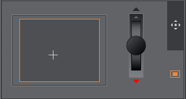
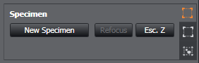
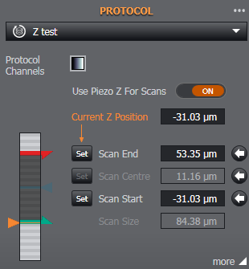

Acquisition Control
The Acquisition Control tab is organised into 4 sections as outlined below:

Live
This provides a real-time live view according to the current settings.
Snap
Take a snap-shot of the current view.
Select between using the active channel or protocol channels for Live and Snap acquisitions.
Active Channel
Adjust commonly used parameters for the active channel. Use the drop-down menu to view the current protocol channels available. Use the Channel Manager shortcut to view the channel manager settings.
Adjust Laser power for the currently selected laser as a percentage of maximum power
Adjust EM Gain (EMCCD cameras e.g. Andor iXon EMCCD Series).
Adjust Exposure Time (ms) note that the exposure time is dependant on the acquisition device. If the exposure time entered is not possible, the closest value that the acquisition device can achieve will be used.

Navigation
Locate areas of interest and focus without the need to go near the scope.
Move the stage in X,Y and microscope Z axes (where available) using the on-screen joysticks. The movement can be set between Coarse movement (default, fastest speed) and Fine (move in the finest increments). Fine is highlighted in orange when this is enabled. The movement settings may be adjusted in Preferences, Navigation Settings.
Once bounds have been set (see Set Bounds below), the lower tab allows movement by clicking inside the map:


Specimen this provides the follows functions:
New Specimen - This option clears the current bounds and escapes the current objective.
Refocus - refocus the objective once the specimen is loaded onto the stage. Once the specimen is refocused you can reset the Bounds or continue to use the existing Bounds of the previous specimen
Esc Z - Escape the objective to a safe position.

Set bounds for the top left and bottom right corners. This can be used to ensure you don't navigate away from the region of interest within a sample completely. A sub-window will appear to highlight the current position of the stage within the set bounds. The Lock and Unlock buttons let you lock or free the set bounds as required, while Clear removes the set bounds completely. Refocus may be used to refocus the current image. Use the refocus control to adjust focus up or down for the current objective. When a new sample or specimen is to be viewed use New Specimen to clear the set bounds and escape the current objective settings.
Preview Montage will capture and show an image of the area defined by the stage bounds. See also Specimen Navigation.

The Field Position menu provides the following options:
Add the current position to the data table
Replace the selected position in the table with the current position.
Remove the selected position from the table
The current X and Y positions and the Ref Z focus position

Protocol
This menu enables the available protocols to be quickly selected and displays the settings for the current protocol. Use the drop-down list to select between available protocols. Use the Protocol Manager shortcut to view the Protocol settings.
Use Piezo Z for Scans. If the system is fitted with both a piezo and microscope Z, this will toggle between which device is used for Z scans. The piezo is much faster, but has a limited range. Default: ON
Z-position. Adjust the current Z device position (orange). For Start/End mode (see below) the start position is highlighted red and end position highlighted in green for the Z-scan. If Centre/Size mode is selected the centre position is highlighted in blue. Note - When using the piezo as the Scan device in a Multi-Field Protocol, the stack will always be centred. When using the microscope, the stack will start at the Ref. Z position if the stack has been defined using Start/End. The stack will be centred if it has been defined using Centre/Size. See also Adding Fields.
"more". Click "more" to view additional options. Click "more" again to return to the previous menu.
Note: If a protocol has not been configured, an on-screen prompt Please add a protocol is displayed. Clicking the link will take you to the Protocol Manager to enter the required protocol settings.

Select the order of the Z-scan Acquisition:
For each channel, acquire all z points: runs through the Z-scan for each channel before moving to the next channel and repeating the Z-scan across all points. Use this option for the shortest total acquisition time when using different emission filters for different Channels. However, the delay between Channels will be the total time to complete each Z-scan.
For each Z point, acquire all channels: acquires all channels at each Z point, moving on to each subsequent Z point and repeating the process until the Z-scan is complete. Use this option for the smallest delay between Channels when using different emission filters. The total time for the protocol may be longer.
Scan Mode: Select between Start/End mode or Centre/Size mode. Note - When using the Piezo as the Z Scan device, the Z-stack will always be centred on the current microscope position. When using the microscope as the Z scan device, Start/End will define the start of the Z-stack. See also Adding Fields.
Select between defining the scan by Step Size, Step Count or Auto Step Size. In Auto Step Size, the optimal step size for the Z-stacks is determined (based on Nyquist sampling) given the optical characteristics of the system.

Run Protocol
Start acquisition according to the selected protocol settings.
Click Acquire to start the acquisition. Pause and stop controls may be used to pause or stop an acquisition in progress. The Run Time for the protocol and the time Remaining until the protocol is complete is also displayed.
Note: If a protocol has not been configured and selected, Define a protocol is displayed in place of Acquire. Clicking the link will take you to the Protocol Manager to enter the required protocol settings.